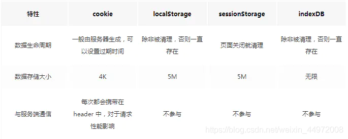

渐进式web应用（PWA）？
PWA 指的是使用指定技术和标准模式来开发的 Web 应用，这同时赋予它们 Web 应用和原生应用的特性。
web应用：
更加易于发现：相比于安装应用，访问一个网站显然更加容易和迅速
原生应用：
与操作系统可以更加完美的整合，也因此为用户提供了无缝的用户体验。
你可以通过安装应用使得它在离线的状态下也可以运行；
相较于使用浏览器访问，用户也更喜欢通过点击主页上的图标来访问它们喜爱的应用
怎么使应用成为PWA？
前言：
PWA 不是只使用一种技术创建的。它代表了构建 Web 应用程序的新理念，涉及一些特定的模式，API 和其他功能。
判断你的应用是否为PWA？
应用程序满足某些要求，或者实现了一组特定的功能，例如离线工作、可安装、易于同步、可以发送推送通知等，我们就可以将其视为 PWA
辨别一个 Web 应用是否是 PWA 有一些关键原则。一个 PWA 应该具有以下特点：
- 可发现（Discoverable）, 可以通过搜索引擎发现。
- 可安装（Installable）, 可以出现在设备的主屏幕。
- 可链接（Linkable）, 可以简单地通过 URL 分享。
- 独立于网络（Network independent）, 可以在离线状态或者是在网速很差的情况下运行。
- 渐进式（Progressive）, 在老版本的浏览器仍旧可以使用，在新版本的浏览器上可以使用全部功能。
- 可重入（Re-engageable）, 无论何时有新的内容，都可以发送通知。
- 响应式（Responsive）, 在任何具有屏幕和浏览器的设备上可以正常使用——包括手机、平板电脑、笔记本、电视、冰箱等。
- 安全（Safe）, 在用户、应用和服务器之间的连接是安全的，第三方无法访问你的敏感数据。
通过Service workers让PWA离线工作
Service Worker是什么
Service Worker 是浏览器和网络之间的虚拟代理。解决了如何正确缓存网站资源并使其在离线时可用的问题。
Service Worker 运行在一个与页面 JavaScript 主线程独立的线程上，并且无权访问 DOM 结构。
它不仅仅提供离线功能，还可以做包括处理通知、在单独的线程上执行繁重的计算等事务。Service workers 非常强大，
因为他们可以控制网络请求、修改网络请求、返回缓存的自定义响应，或者合成响应。
service Workers 要求要必须在 HTTPS 下才能运行,因为它们非常强大，所以 Service Worker 只能在安全的上下文中执行（即 HTTPS）。如果您想在将代码推送到生产环境之前先进行实验，则可以始终在本地主机上进行测试或设置 GitHub Pages，这两者都支持HTTPS。
为了便于本地开发,localhost 也被浏览器认为是安全源 ngrok
Service Worker离线
- 前提：manifest清单
-
install
注册一个Service Worker(浏览器支持的时候)，注册完成后，sw.js 文件会自动下载、安装，然后激活。
我们可以初始化缓存并添加离线应用时所需的文件。
- fetch: 当缓存存在时，我们使用缓存来提供服务，而不重新请求数据。不管当前应用是在线还是离线，我们都这么做
-
activate: 更新，当我们的应用有了一个新版本，Service Worker 会将我们所有的文件（包括那些新的文件）添加到一个新的缓存中。
这个时候一个新的 Service Worker 会在后台被安装，而旧的 Service Worker 仍然会正常运行，直到没有任何页面使用到它为止，
这时候新的 Service Worker 将会被激活，然后接管所有的页面。
IndexedDB 和 cacheStorage
IndexedDB
浏览器内的SQLite，但是有一点不同，Indexed DB不属于关系型数据库，是NoSQL。
特点：
键值对储存、
异步、
支持事务、
支持索引、
同源限制、
储存空间大、
支持二进制储存。

cacheStorage(浏览器缓存)
- 所谓浏览器缓存其实就是指在本地使用的计算机中开辟一个内存区，同时也开辟一个硬盘区作为数据传输的缓冲区，然后用这个缓冲区来暂时保存用户以前访问过的信息。
- 表示 Cache 对象的存储。它提供了一个 ServiceWorker 、其它类型worker或者 window 范围内可以访问到的所有命名cache的主目录（它并不是一定要和service workers一起使用，即使它是在service workers规范中定义的），并维护一份字符串名称到相应 Cache 对象的映射。
-
用来存储 Response 对象的，也就是对 HTTP 响应进行缓存